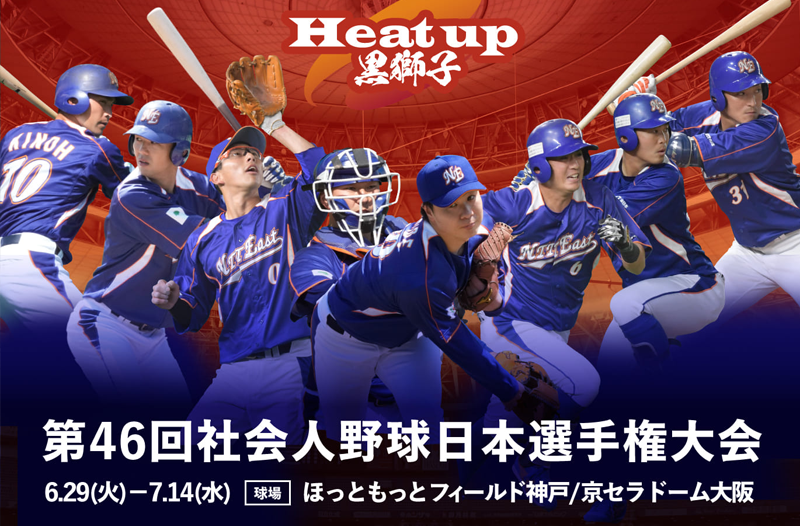

- 関西六大学春季リーグ戦
- 発足： 1970年
- 英表記： Kansai 6 Baseball League
- 英略字表記： K6BL
- 所属： ENEOS硬式野球部
- シーズン： 春・秋リーグ戦
- 主な開催地： 南港球場・大阪球場・万博記念公園球場 他

速報中！
- 大会名やカップ名などスタジアム
-
- 00ウラ
- 先攻チーム名地域
- 00
- 後攻チーム名地域
- 00
- 大会名やカップ名などスタジアム
-
- 00ウラ
- 先攻チーム名地域
- 00
- 後攻チーム名地域
- 00
- 大会名やカップ名などスタジアム
-
- 00ウラ
- 先攻チーム名地域
- 00
- 後攻チーム名地域
- 00
加盟チーム
-

大阪学院大学
-
龍谷大学
-
神戸学院大学
-
京都産業大学
-
大阪経済大学
-
大阪商業大学
個人打撃成績（通算）
| 年度 | リーグ | 試合数 | 打数 | 得点 | 安打 | ２塁打 | ３塁打 | 本塁打 | 打点 | 盗塁 | 盗塁死 | 四球 | 死球 | 三振 | 打率 | 出塁率 | 長打率 | OPS | 併殺 | 犠打 | 犠飛 | 失策 | IBB |
|---|---|---|---|---|---|---|---|---|---|---|---|---|---|---|---|---|---|---|---|---|---|---|---|
| ▽ | ▽ | ▽ | ▽ | ▽ | ▽ | ▽ | ▽ | ▽ | ▽ | ▽ | ▽ | ▽ | ▽ | ▽ | ▽ | ▽ | ▽ | ▽ | ▽ | ▽ | ▽ | ▽ | ▽ |
| 2022 | 関西学生秋季 | 13 | 431 | 55 | 115 | 12 | 6 | 2 | 52 | 10 | 2 | 36 | 4 | 71 | .270 | .320 | .344 | 0.666 | 16 | 23 | 5 | 0 | 0 |
| 2022 | 関西学生春季 | 13 | 431 | 55 | 115 | 12 | 6 | 2 | 52 | 10 | 2 | 36 | 4 | 71 | .270 | .320 | .344 | 0.666 | 16 | 23 | 5 | 0 | 0 |
| 2021 | 関西学生秋季 | 13 | 431 | 55 | 115 | 12 | 6 | 2 | 52 | 10 | 2 | 36 | 4 | 71 | .270 | .320 | .344 | 0.666 | 16 | 23 | 5 | 0 | 0 |
| 2021 | 関西学生春季 | 13 | 431 | 55 | 115 | 12 | 6 | 2 | 52 | 10 | 2 | 36 | 4 | 71 | .270 | .320 | .344 | 0.666 | 16 | 23 | 5 | 0 | 0 |
個人打撃成績（代表）
| 年度 | リーグ | 試合数 | 打数 | 得点 | 安打 | ２塁打 | ３塁打 | 本塁打 | 打点 | 盗塁 | 盗塁死 | 四球 | 死球 | 三振 | 打率 | 出塁率 | 長打率 | OPS | 併殺 | 犠打 | 犠飛 | 失策 | IBB |
|---|---|---|---|---|---|---|---|---|---|---|---|---|---|---|---|---|---|---|---|---|---|---|---|
| ▽ | ▽ | ▽ | ▽ | ▽ | ▽ | ▽ | ▽ | ▽ | ▽ | ▽ | ▽ | ▽ | ▽ | ▽ | ▽ | ▽ | ▽ | ▽ | ▽ | ▽ | ▽ | ▽ | ▽ |
| 2022 | U-22代表 | 5 | 24 | 72 | 20 | 12 | 6 | 2 | 52 | 10 | 2 | 36 | 4 | 71 | .270 | .320 | .344 | 0.666 | 16 | 23 | 5 | 0 | 0 |